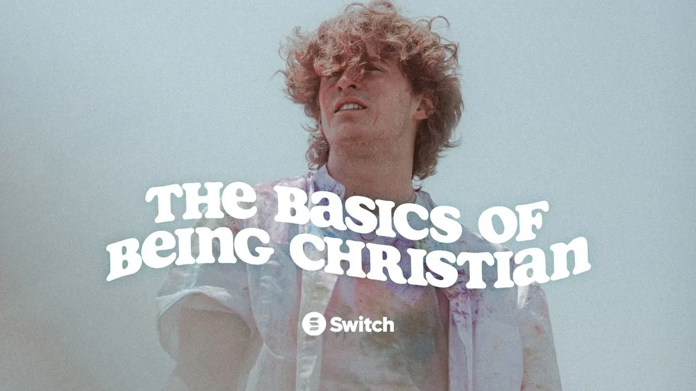
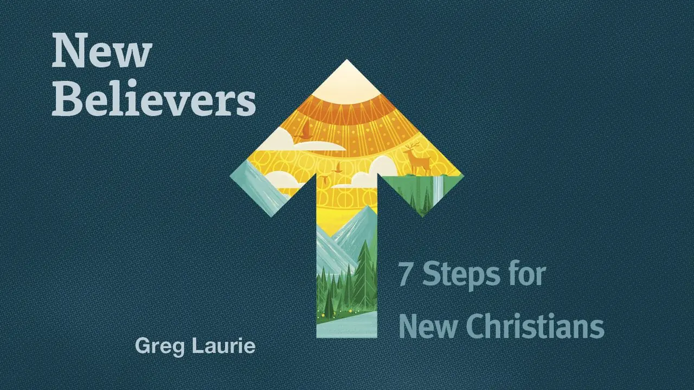
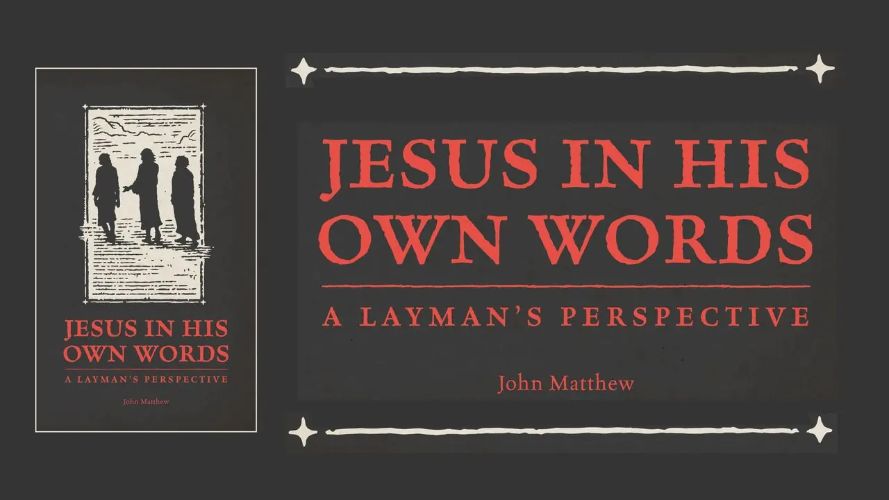
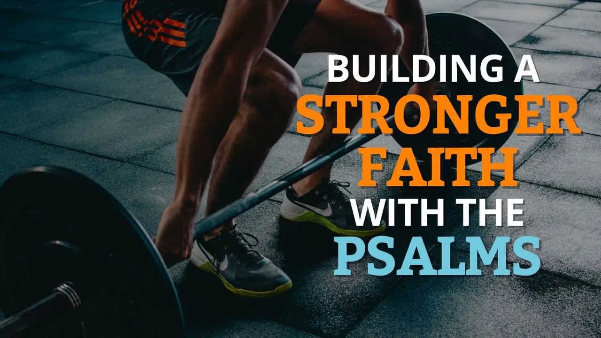
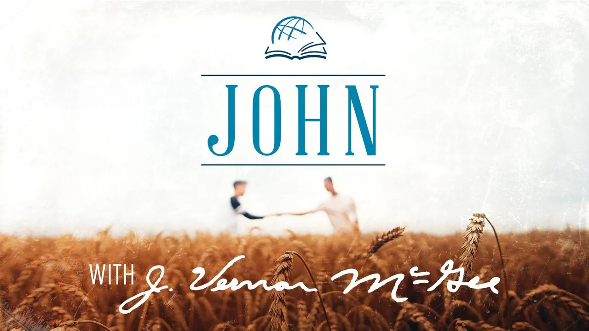
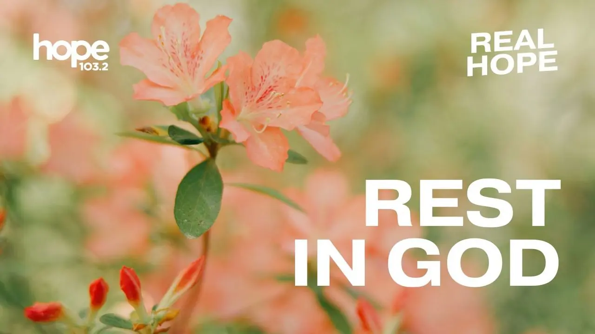
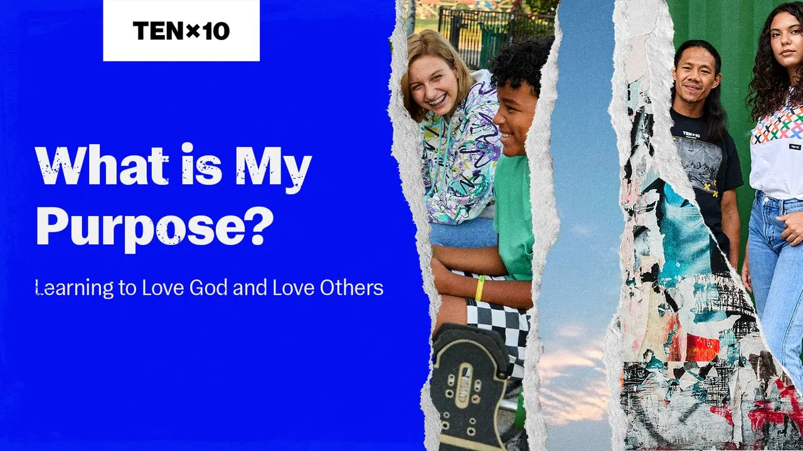
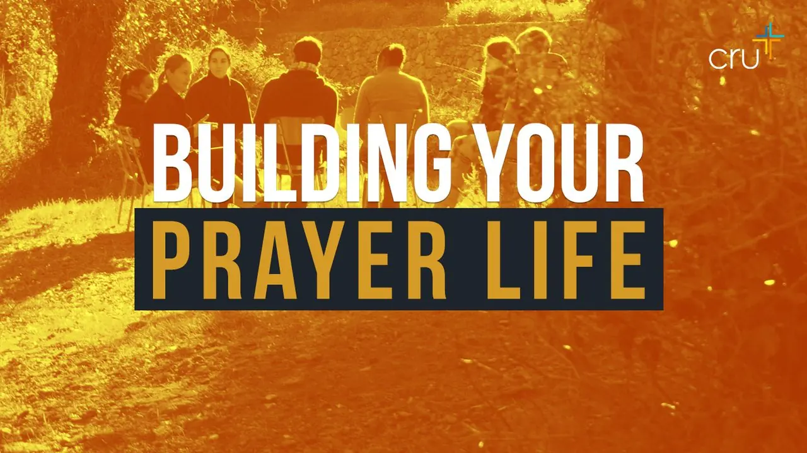
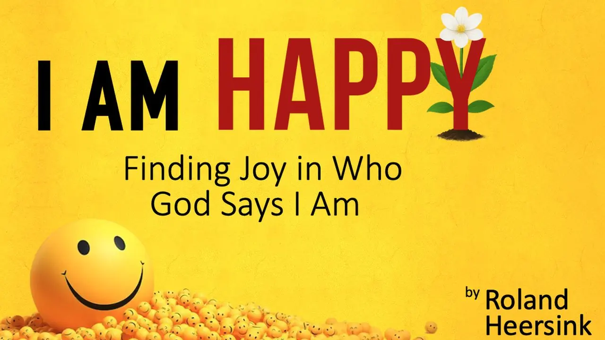
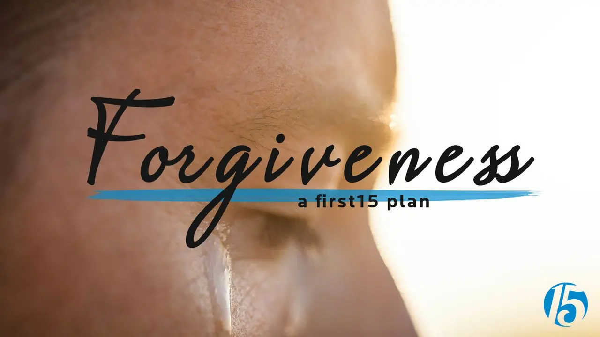

01
Start here
Who Jesus is, and how a person begins to follow him.

Who Is Christ Jesus
Who Is Jesus? · Louie Giglio

How to Be a Christian
The Basics of Being Christian
Love Like Jesus
Life.Church

First Steps with Jesus
Start here

7 Steps for New Christians
Greg Laurie

Jesus in His Own Words
John Matthew
02
The Bible
The power of Scripture, and a stronger faith through the Psalms.
The Power of the Bible
Building Your Life on the Word

Building a Stronger Faith with the Psalms
A reading on honest prayer

The Gospel of John
J. Vernon McGee
03
Daily life
Habits, rest, joy, and the love a Christian is made for.
Daily Life of a Christian
Finding Joy in Everyday Life · Dr. Timothy Brown
Habits of Christians
Holy Habits · Dr. Timothy Brown

Resting in God
Hope Media

Love and Purpose
Learning to love God and love others

Building Your Prayer Life
Cru
Armor of God
Vladimir Savchuk
04
The heart
Grace, joy, courage, and healing when life feels heavy.
When Grace Feels Impossible
Scott Savage
God Sees You
Déborah Rosenkranz

I Am Happy
Finding joy in who God says I am · Roland Heersink

Facing Your Giants
Max Lucado
Heal Your Body
Seek the Healer and receive your healing

Forgiveness
First 15
Goliath Must Fall
Louie Giglio